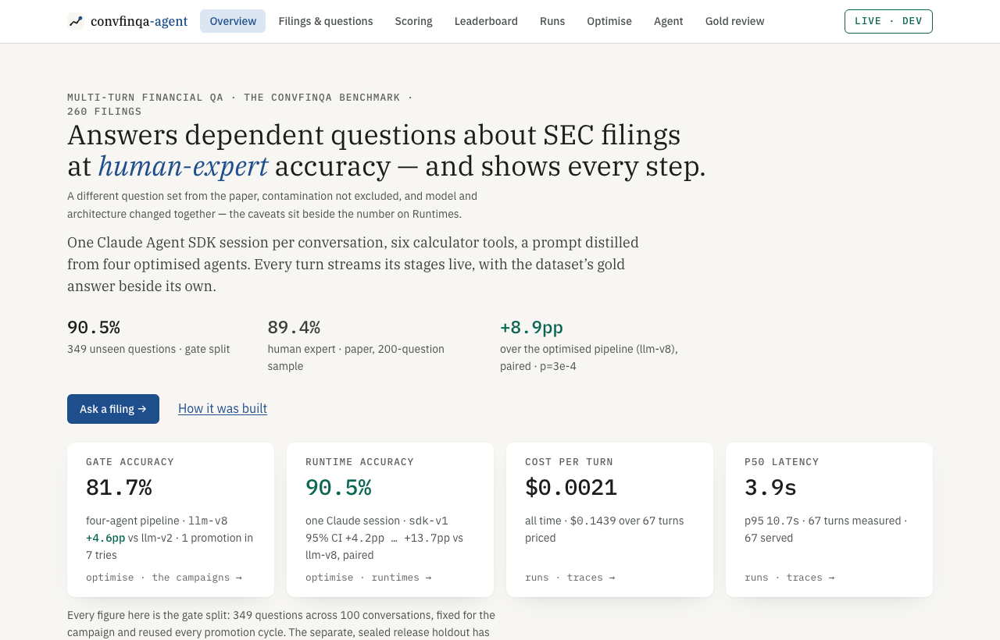
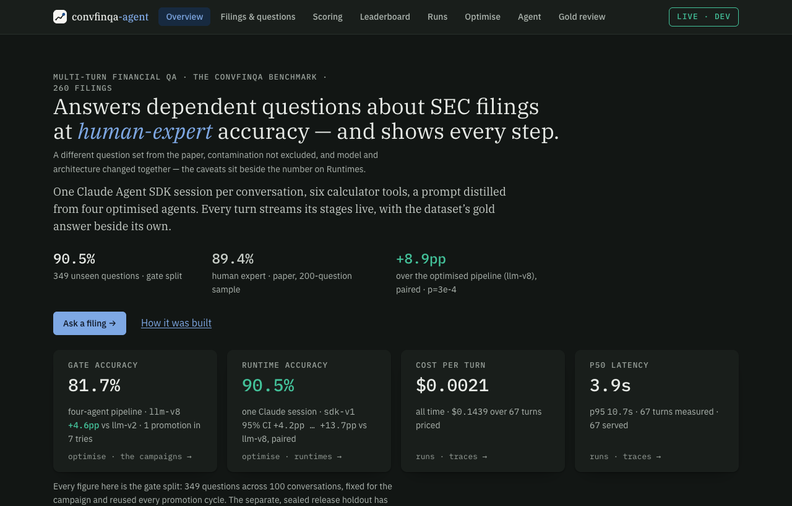
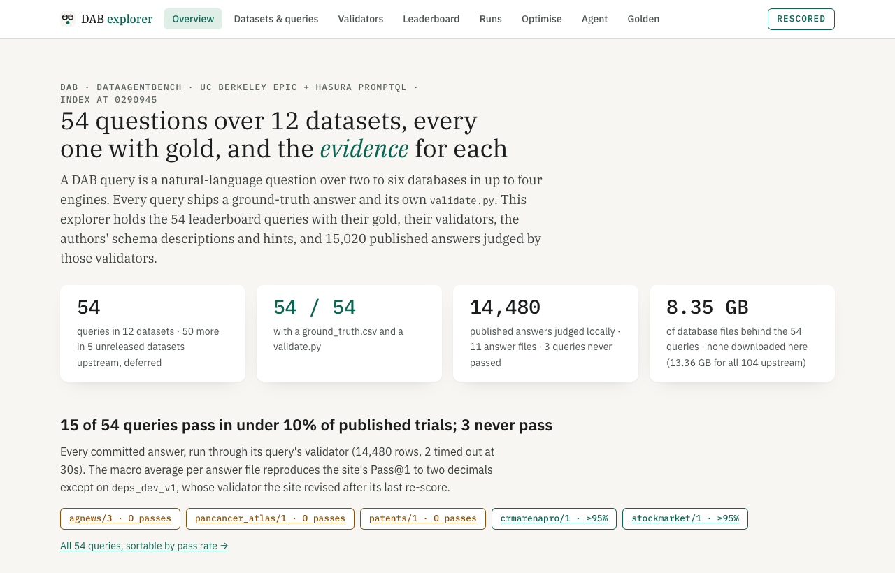
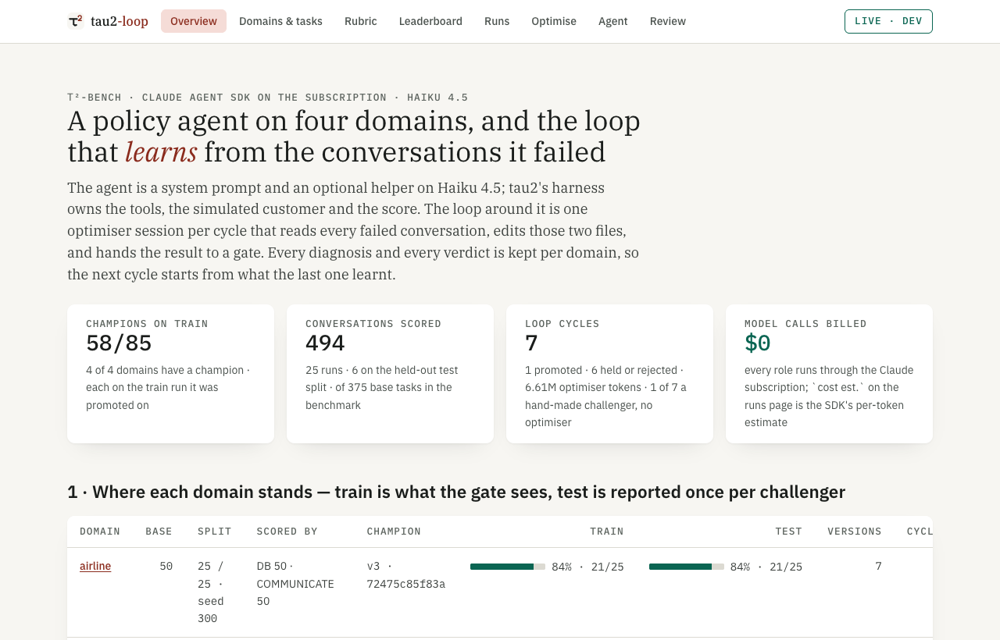
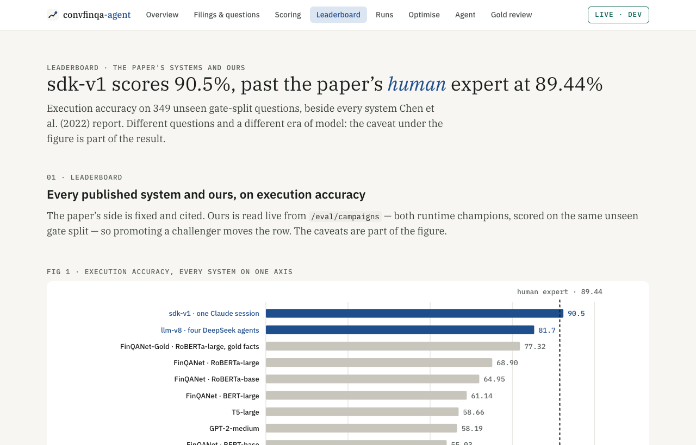
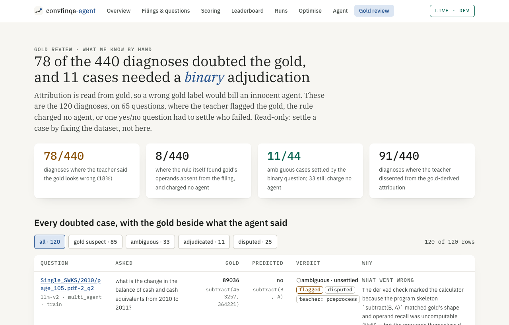
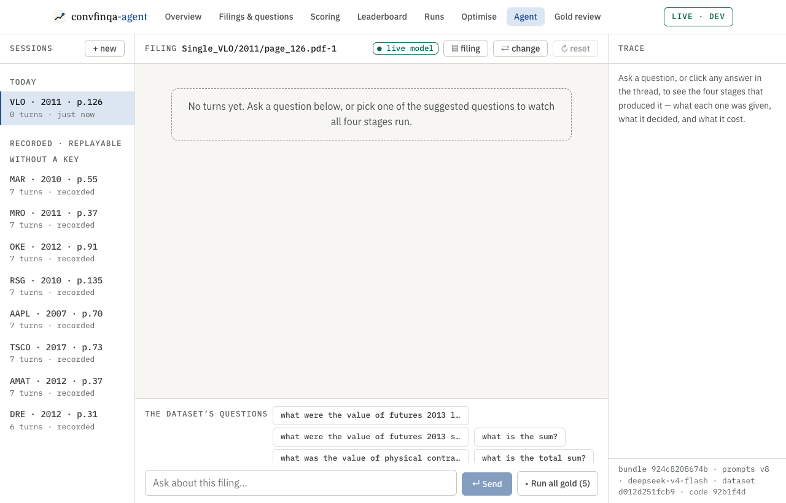
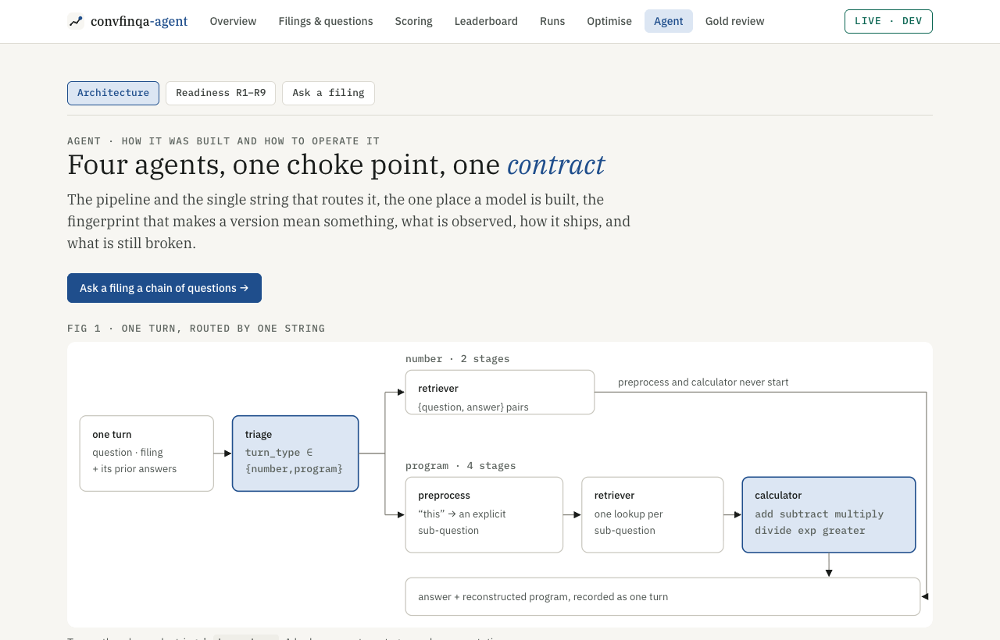
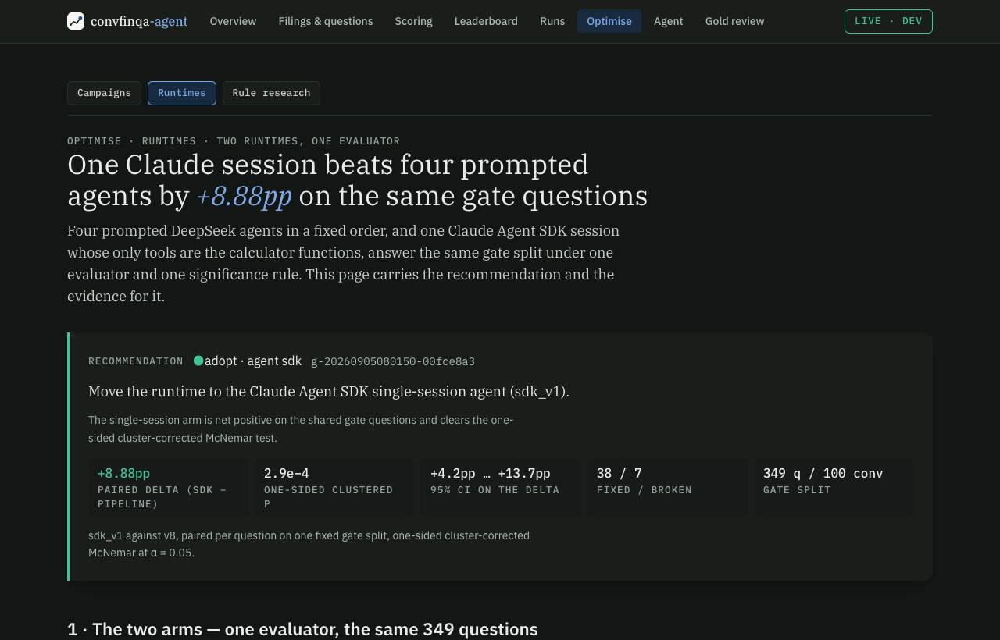
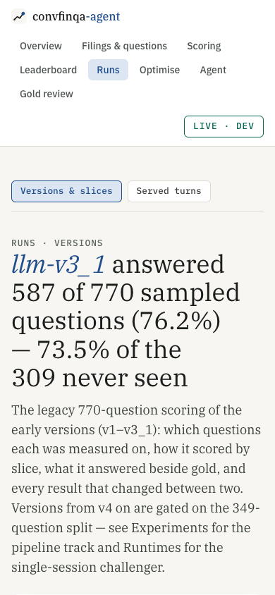

s17 · build walkthrough · ConvFinQA-agent branch ui-migration · 2026-09-30
ConvFinQA now wears the house UI in blue, and all three apps pull it from one kit
Plan s16, all recommended options, delivered: the Console's rail, Tailwind and amber are gone; the eight house tabs, the Field Guide tokens and plain CSS are in; the shared parts live in nmp-central-ai/ui as kit 1.0.0, and DataAgentBench and tau2-loop run on it too.
ui-check PASS on each branch1 · The look — one header, three colours
ConvFinQA · overview · light

ConvFinQA · overview · dark

DataAgentBench on kit 1.0.0

tau2-loop on kit 1.0.0

Same header, same pill tabs, same type and spacing. Only the accent triple differs, and it lives in each project's own src/theme.css.
2 · The three new tabs — each built from data the repo already had
Leaderboard · the paper's 12 systems and ours on one axis

/eval/campaigns; the human expert is the reference line; the paradigm caveat sits under the figure.Gold review · what we know by hand

GET /eval/gold-review over the committed diagnoses ledger: 120 review rows on 65 questions; shipped in the demo image and smoke-checked.Scoring (slot 3) gathers the metric, the gold-derived attribution walk, the promotion gate and the confidence judge, which moved there from Runtimes.
3 · The working surfaces — chat and the evidence pages
Agent › Ask a filing · the one wide route

Agent · architecture, diagrams at 13px

Optimise › Runtimes · dark

Runs · 390px

4 · What shipped where — every commit on a branch, nothing pushed
| Repo · branch | Commits | What | Verified |
|---|---|---|---|
| nmp-central-aiui-kit | 6 | kit 0.1.0 → 1.0.0 (ui/: DESIGN.md, kit/, accents.yaml, template/, CHANGELOG.md), scripts/ui_kit.py (new · check · sync · accent), make ui-check/ui-sync/ui-new, registry ui: blocks, spec s05 + D25, platform-ui skill + eval, plugin 0.3.0, PLATFORM.md rule 8 | ● ruff, mypy, 27 tests, plugin validate, template builds |
| ConvFinQA-agentui-migration | 7 | C0 kit + bridge · C1 shell, routes, redirects · C2 shared pieces · C3–C5 every tab, Gold review, Tailwind out · docs · kit 1.0.0 | ● lint, 182 unit, 8 e2e (landing), build, 54 backend tests, story_check |
| DataAgentBenchui-kit-1.0.0 | 1 | vendored kit, green theme.css (+ SQL tokens), app.css minus 165 duplicate lines, kit Shell | ● 51 tests, build; pixel-identical on 6/8 pages, SVG bar fix on 2 |
| tau2-loopui-kit-1.0.0 | 1 | vendored kit, red theme.css, app.css minus 141 duplicate lines, kit Shell, theme-color fixed | ● 76 tests, build; layout identical except captions (+24px each) |
5 · Left for you — the decisions a branch cannot make
- Merge order: nmp-central-ai
ui-kitfirst (somake ui-checkexists), then the three app branches. tau2-loop's branch is cut frommain; your uncommitteds09-banking-planwork touches different files. - After merging nmp-central-ai:
make install-agent-context FORCE=1puts the one-line UI convention into the portfolio CLAUDE.md/AGENTS.md;/pluginupdate picks upplatform-ui. - Pre-existing, not fixed: DataAgentBench overflows at 390px on Runs, Agent and Golden (unchanged by the sync); the portfolio site's case-study text still names
/admin/traces(the address redirects). - Found and fixed on the way: the model-swap CI printed a fraction as points; the Promote panel described a rule its endpoint does not enforce.